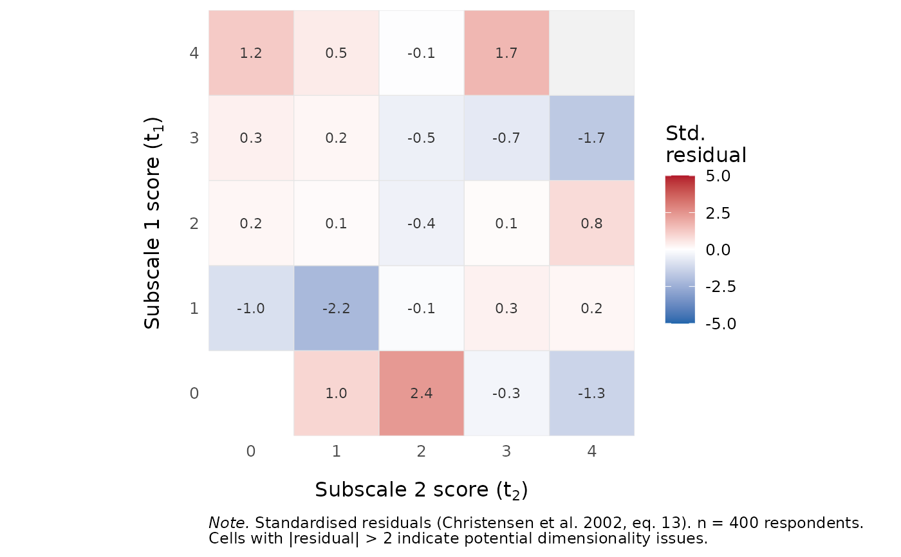

Standardised Residuals from the Joint Subscore Distribution
Source:R/martin_lof.R
RMdimMartinLofResiduals.RdDiagnostic accompanying RMdimMartinLof: per-cell standardised
residuals from the joint distribution of subscores under unidimensionality
(Christensen, Bjorner, Kreiner, & Petersen, 2002, eq. 13). Useful for
identifying where a partition deviates from the unidimensional null
rather than just whether it does (which RMdimMartinLof() answers).
Arguments
- data
A data.frame or matrix of item responses (0-based, non-negative integers). Rows with any
NAare dropped.- partition
Same format as in
RMdimMartinLof: a list of item-name/index vectors, or a length-ncol(data)vector of group labels. Each subscale must contain at least 2 items.- output
Character.
"kable"(default) for a 2-D pipe-format residual table when D = 2 (long-format kable when D > 2),"dataframe"for the underlying long-format data.frame, or"ggplot"for a diverging-fill heatmap (withfacet_wrapovert3for D = 3, error for D > 3).- flag_threshold
Numeric. Cells with
|residual| > flag_thresholdare flagged: marked as**bold**in the kable, shown in theflaggedcolumn of the dataframe. Default2.- color_by
Character. For
output = "ggplot", what the tile fill colour encodes."residual"(default) – diverging red-white-blue scale centred at 0, the most directly diagnostic."n"– sequential blue scale on the observed cell count, useful for spotting whether large-magnitude residuals are driven by sparse cells. Either way, the numeric residual is printed inside each cell.- color_limits
Numeric length-2 vector or
NULL. Caps the colour scale foroutput = "ggplot". Defaultc(-5, 5)whencolor_by = "residual"(sparse-cell residuals from(o-e)/sqrt(n*p*(1-p))can be enormous when expected counts are tiny; capping the scale stops outliers from compressing the rest of the plot). The unclipped residual values still appear as cell labels.NULLforcolor_by = "n", which uses the natural data range.- min_expected
Numeric or
NULL. If set, cells withexpected < min_expectedhave their residual set toNA(they appear grey in the heatmap and are not flagged). DefaultNULL(no filtering). Settingmin_expected = 1(or5) is the analogue of the Cochran rule for sparse-cell chi-square contributions and removes residuals whose asymptotic standard normal approximation is unreliable.
Value
output = "kable": aknitr_kableobject. For D = 2, a wide table with rows =t1, columns =t2, cells = standardised residual (**bold**if flagged, em-dash if NA). For D > 2, long-format with one row per cell.output = "dataframe": a long-format data.frame with columnst1, ...,tD,total,observed,expected,residual,flagged.output = "ggplot": ageom_tile()heatmap (D = 2 or 3 only).
Details
For each cell of the joint subscore table (indexed by \((t_1, \ldots, t_D)\)), the conditional probability under H0 given the total score \(t = \sum_d t_d\) is $$p(t_1, \ldots, t_D \mid t) = \prod_d \gamma^{(d)}_{t_d} / \gamma_t,$$ the expected count is \(e = n_t \cdot p\), and the residual is \((o - e) / \sqrt{n_t \cdot p \cdot (1 - p)}\). CML estimates from the unidimensional model are used for the \(\gamma\)-functions.
Reading the table (D = 2): under the unidimensional null, residuals
should be patternless and roughly N(0, 1). Multidimensionality with
positively correlated dimensions typically shows up as positive
residuals at the corners of each antidiagonal (high t1 + low t2,
low t1 + high t2) and negative residuals near the antidiagonal
centre (matched subscores). Negatively correlated dimensions show
positive residuals at the table corners (high/low and low/high) and
negative residuals at high/high and low/low. See Christensen et al.
(2002, section7) for a worked example.
Cells where the total score has no observed cases (n_t = 0) are
uninformative and are dropped from the output.
References
Christensen, K. B., Bjorner, J. B., Kreiner, S., & Petersen, J. H. (2002). Testing unidimensionality in polytomous Rasch models. Psychometrika, 67(4), 563-574. doi:10.1007/BF02295132
Examples
# \donttest{
set.seed(1)
dat <- as.data.frame(matrix(sample(0:1, 400 * 8, replace = TRUE),
nrow = 400, ncol = 8))
colnames(dat) <- paste0("I", 1:8)
# Wide kable table for D = 2
RMdimMartinLofResiduals(dat,
partition = list(c("I1","I2","I3","I4"),
c("I5","I6","I7","I8")))
#> Warning: NaNs produced
#>
#>
#> Table: Standardised residuals (Christensen et al. 2002, eq. 13). Rows = subscale 1 score, columns = subscale 2 score. **Bold** = |residual| > 2. -- = uncomputable. n = 400 respondents.
#>
#> |t1\t2 |0 |1 |2 |3 |4 |
#> |:-----|:-----|:---------|:--------|:-----|:-----|
#> |0 | |0.95 |**2.38** |-0.32 |-1.31 |
#> |1 |-0.95 |**-2.17** |-0.12 |0.32 |0.22 |
#> |2 |0.22 |0.11 |-0.41 |0.10 |0.84 |
#> |3 |0.35 |0.22 |-0.46 |-0.66 |-1.67 |
#> |4 |1.22 |0.47 |-0.06 |1.67 |-- |
# Heatmap
if (requireNamespace("ggplot2", quietly = TRUE)) {
RMdimMartinLofResiduals(dat,
partition = c(1,1,1,1,2,2,2,2),
output = "ggplot")
}
#> Warning: NaNs produced

# Underlying data.frame for custom analysis
df <- RMdimMartinLofResiduals(dat,
partition = c(1,1,1,1,2,2,2,2),
output = "dataframe")
#> Warning: NaNs produced
df[df$flagged, ]
#> t1 t2 total observed expected residual flagged
#> 3 0 2 2 18 11.02774 2.378139 TRUE
#> 4 1 1 2 21 28.59561 -2.170933 TRUE
# }